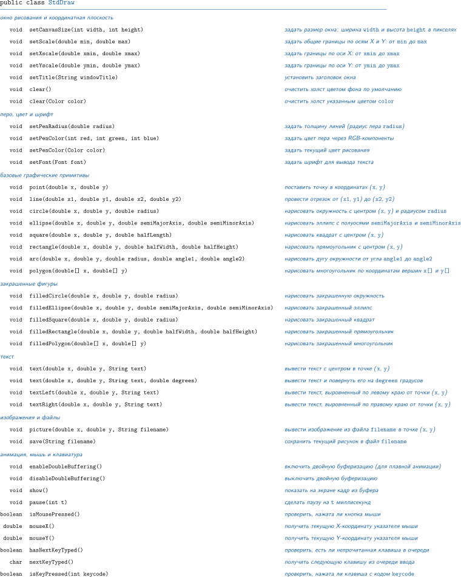
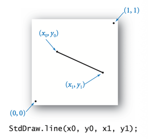
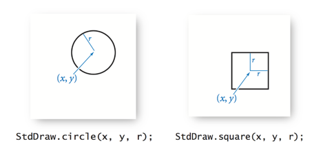
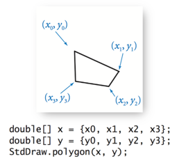
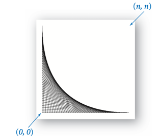

StdDraw
StdDraw - библиотека для рисования и анимации геометрических фигур в графическом окне.

Класс StdDraw предоставляет статические методы для создания рисунков в ваших программах. Он использует простую графическую модель, которая позволяет создавать рисунки из точек, линий, квадратов, окружностей и других геометрических фигур в окне на компьютере и сохранять рисунки в файл. Стандартная графика также включает средства для работы с текстом, цветом, изображениями и анимацией, а также взаимодействие пользователя через клавиатуру и мышь.
Начало работы.
Чтобы использовать этот класс, у вас должен быть StdDraw.java. Скачайте StdDraw.java и поместите в рабочую директорию проекта.
Теперь скопируйте в редактор следующую короткую программу:
public class TestStdDraw {
public static void main(String[] args) {
StdDraw.setPenRadius(0.05);
StdDraw.setPenColor(StdDraw.BLUE);
StdDraw.point(0.5, 0.5);
StdDraw.setPenColor(StdDraw.MAGENTA);
StdDraw.line(0.2, 0.2, 0.8, 0.2);
}
}
Если скомпилировать и запустить программу, должно появиться окно с толстой пурпурной линией и синей точкой. Эта программа иллюстрирует два основных типа методов в стандартной графике: методы, которые рисуют геометрические фигуры, и методы, которые управляют параметрами рисования. Методы StdDraw.line() и StdDraw.point() рисуют линии и точки; методы StdDraw.setPenRadius() и StdDraw.setPenColor() управляют толщиной линии и цветом.
Точки и линии.

Вы можете рисовать точки и отрезки следующими методами:point(double x, double y)line(double x1, double y1, double x2, double y2)
Координаты x и y должны находиться в области рисования (по умолчанию между 0 и 1), иначе точки и линии не будут видны.
Квадраты, окружности, прямоугольники и эллипсы.
Вы можете рисовать квадраты, окружности, прямоугольники и эллипсы следующими методами:

circle(double x, double y, double radius)ellipse(double x, double y, double semiMajorAxis, double semiMinorAxis)square(double x, double y, double halfLength)rectangle(double x, double y, double halfWidth, double halfHeight)
Все эти методы принимают как аргументы положение и размер фигуры. Положение всегда задается x- и y-координатами центра. Размер окружности задается радиусом, а размер эллипса — длинами большой и малой полуосей. Размер квадрата или прямоугольника задается половиной ширины или половиной высоты. Соглашение для рисования квадратов и прямоугольников согласовано с окружностями и эллипсами, но для новичков может быть неочевидным.
На иллюстрации видно, что x и y задают центр фигуры, а r задает размер (радиус окружности или половину стороны квадрата).
Методы выше рисуют контуры фигур. Следующие методы рисуют закрашенные версии:
filledCircle(double x, double y, double radius)filledEllipse(double x, double y, double semiMajorAxis, double semiMinorAxis)filledSquare(double x, double y, double radius)filledRectangle(double x, double y, double halfWidth, double halfHeight)
Дуги окружности.
Вы можете рисовать дуги окружности следующим методом:
arc(double x, double y, double radius, double angle1, double angle2)
Дуга рисуется на окружности с центром в (x, y) и заданным радиусом. Дуга тянется от angle1 до angle2. По соглашению углы — полярные (угол против часовой стрелки от оси x) и задаются в градусах. Например, StdDraw.arc(0.0, 0.0, 1.0, 0, 90) рисует дугу единичной окружности от позиции «3 часа» (0 градусов) до «12 часов» (90 градусов).
Многоугольники.

Вы можете рисовать многоугольники следующими методами:
polygon(double[] x, double[] y)filledPolygon(double[] x, double[] y)
Точки многоугольника — это (x[i], y[i]).
Для polygon(x, y) индекс i задает очередную вершину (x[i], y[i]), а массивы обходятся по порядку.
Например, следующий фрагмент кода рисует закрашенный ромб с вершинами (0.1, 0.2), (0.2, 0.3), (0.3, 0.2) и (0.2, 0.1):
double[] x = { 0.1, 0.2, 0.3, 0.2 };
double[] y = { 0.2, 0.3, 0.2, 0.1 };
StdDraw.filledPolygon(x, y);
Размер пера.
Перо круглое, поэтому если установить радиус пера r и нарисовать точку, получится круг радиуса r. Линии имеют толщину 2r и скругленные концы. Радиус пера по умолчанию равен 0.002 и не зависит от масштабирования координат. Этот радиус примерно равен 1/500 ширины холста по умолчанию, поэтому если рисовать 200 точек, равномерно расположенных на горизонтальной или вертикальной линии, отдельные круги будут видны, а если рисовать 250 таких точек, результат будет выглядеть как сплошная линия.
setPenRadius(double radius)
Например, StdDraw.setPenRadius(0.01) делает толщину линий и размер точек в пять раз больше стандартного 0.002. Чтобы рисовать точки минимально возможного радиуса (один пиксель на типичных дисплеях), установите радиус пера в 0.0.
Цвет пера.
Все геометрические фигуры (точки, линии, окружности и т.д.) рисуются текущим цветом пера. По умолчанию он черный. Изменить цвет можно следующими методами:
setPenColor(int red, int green, int blue)setPenColor(Color color)
Первый метод позволяет задавать цвет через систему RGB. Второй метод позволяет задавать цвет типом данных Color из пакета java.awt. Стандартная графика определяет ряд готовых цветов, включая BLACK, WHITE, RED, GREEN и BLUE. Например, StdDraw.setPenColor(StdDraw.RED) устанавливает красный цвет пера.
Заголовок окна.
По умолчанию заголовок окна стандартной графики — "Standard Draw". Вы можете изменить заголовок следующим методом:
setTitle(String windowTitle)
Этот метод устанавливает заголовок окна в указанную строку.
Размер холста.
По умолчанию все рисование происходит на холсте 512x512. Холст не включает заголовок окна и его границу. Размер холста можно изменить следующим методом:
setCanvasSize(int width, int height)
Этот метод устанавливает размер холста в width x height пикселей. Также он очищает текущий рисунок цветом фона по умолчанию (белым). Обычно этот метод вызывают только один раз, в самом начале программы. Например, StdDraw.setCanvasSize(800, 800) задает размер холста 800x800.
Масштаб холста и система координат.
По умолчанию все рисование происходит в единичном квадрате: (0, 0) внизу слева и (1, 1) вверху справа. Изменить систему координат можно следующими методами:
setXscale(double xmin, double xmax)setYscale(double ymin, double ymax)setScale(double min, double max)
Аргументы — минимальные и максимальные x- или y-координаты, которые будут отображаться на холсте. Например, если вы хотите использовать систему координат по умолчанию, но оставить небольшой отступ, можно вызвать StdDraw.setScale(-.05, 1.05).
Эти методы меняют систему координат только для последующих команд рисования; на уже нарисованные объекты они не влияют. Эти методы не изменяют размер холста; поэтому если масштабы по x и y различаются, квадраты станут прямоугольниками, а окружности — эллипсами.

На примере показана система координат 0..n по обеим осям: линии строятся уже в этом масштабе, а не в стандартном 0..1.
int n = 50;
StdDraw.setXscale(0, n);
StdDraw.setYscale(0, n);
for (int i = 0; i <= n; i++) {
StdDraw.line(0, n - i, i, 0);
}
0 до n по обеим осям, можно рисовать в целочисленной системе координат.
Текст.
Для добавления текста к рисункам можно использовать следующие методы:
text(double x, double y, String text)text(double x, double y, String text, double degrees)textLeft(double x, double y, String text)textRight(double x, double y, String text)
Первые два метода выводят текст текущим шрифтом с центром в (x, y). Второй метод позволяет поворачивать текст. Последние два метода выравнивают текст по левому или правому краю относительно точки (x, y).
Шрифт по умолчанию — Sans Serif размером 16 пунктов. Изменить шрифт можно следующим методом:
setFont(Font font)
Чтобы задать шрифт, используется тип данных Font из пакета java.awt. Это позволяет выбирать гарнитуру, размер и стиль шрифта. Например, следующий фрагмент кода устанавливает шрифт Arial Bold 60 pt:
import java.awt.Font;
...
Font font = new Font("Arial", Font.BOLD, 60);
StdDraw.setFont(font);
StdDraw.text(0.5, 0.5, "Hello, World");
Изображения.
Для добавления изображений в рисунок можно использовать следующие методы:
picture(double x, double y, String filename)picture(double x, double y, String filename, double degrees)picture(double x, double y, String filename, double scaledWidth, double scaledHeight)picture(double x, double y, String filename, double scaledWidth, double scaledHeight, double degrees)
Эти методы рисуют указанное изображение с центром в (x, y). Изображение должно быть в поддерживаемом формате (обычно JPEG, PNG, GIF, TIFF, BMP). Изображение отображается в собственном размере, независимо от системы координат. При желании можно повернуть изображение на заданный угол против часовой стрелки или масштабировать его так, чтобы оно точно вписалось в ограничивающий прямоугольник.
Сохранение в файл.
Вы можете сохранить рисунок через пункт меню File -> Save. Также можно сохранять программно следующим методом:
save(String filename)
Можно сохранить рисунок в поддерживаемом формате (обычно JPEG, PNG, GIF, TIFF, BMP).
Форматы файлов.
Класс StdDraw поддерживает чтение и запись изображений во всех форматах, поддерживаемых javax.imageio (обычно JPEG, PNG, GIF, TIFF, BMP). Соответствующие расширения файлов: .jpg, .png, .gif, .tif, .bmp.
Рекомендуется использовать PNG для рисунков, состоящих только из геометрических фигур, и JPEG для рисунков, содержащих фотографии. Формат JPEG не поддерживает прозрачный фон.
Очистка холста.
Чтобы очистить весь холст, можно использовать следующие методы:
clear()clear(Color color)
Первый метод очищает холст цветом фона по умолчанию (белым); второй позволяет указать цвет фона. Например, StdDraw.clear(StdDraw.LIGHT_GRAY) очищает холст оттенком серого. Чтобы сделать фон прозрачным, вызовите StdDraw.clear(StdDraw.TRANSPARENT).
Компьютерная анимация и двойная буферизация.
Двойная буферизация — одна из самых мощных возможностей стандартной графики, позволяющая делать анимации. Следующие методы управляют тем, как рисуются объекты:
enableDoubleBuffering()disableDoubleBuffering()show()pause(int t)
По умолчанию двойная буферизация выключена. Это означает, что как только вы вызываете метод рисования (например, point() или line()), результат сразу появляется на экране.
Когда двойная буферизация включена через enableDoubleBuffering(), все рисование происходит на скрытом холсте (offscreen canvas). Этот холст не отображается. Только после вызова show() рисунок копируется со скрытого холста на экранный холст (onscreen canvas), где и показывается в окне. Это можно воспринимать так: все линии, точки, фигуры и текст сначала «накапливаются», а затем рисуются одновременно по запросу.
Главное применение двойной буферизации — анимация: быстрое отображение статичных кадров создает иллюзию движения. Чтобы получить анимацию, повторяйте следующие четыре шага:
- Очистить скрытый холст.
- Нарисовать объекты на скрытом холсте.
- Скопировать скрытый холст на экранный холст.
- Подождать короткое время.
Методы clear(), show() и pause(int t) поддерживают соответственно первый, третий и четвертый шаги.
Например, этот фрагмент кода анимирует два шарика, движущихся по окружности:
StdDraw.setScale(-2.0, +2.0);
StdDraw.enableDoubleBuffering();
for (double t = 0.0; true; t += 0.02) {
double x = Math.sin(t);
double y = Math.cos(t);
StdDraw.clear();
StdDraw.filledCircle(x, y, 0.1);
StdDraw.filledCircle(-x, -y, 0.1);
StdDraw.show();
StdDraw.pause(20);
}
Без двойной буферизации шарики мерцали бы во время движения.
Ввод с клавиатуры и мыши.
В стандартной графике есть базовая поддержка клавиатуры и мыши. Она менее мощная, чем в большинстве UI-библиотек, но значительно проще.
Для перехвата событий мыши можно использовать:
isMousePressed()mouseX()mouseY()
Первый метод сообщает, нажата ли сейчас кнопка мыши. Два последних возвращают текущие x- и y-координаты указателя мыши в той же системе координат, что и холст (по умолчанию — единичный квадрат). Эти методы обычно используют в цикле анимации с небольшой паузой между опросами состояния мыши.
Для перехвата событий клавиатуры можно использовать:
hasNextKeyTyped()nextKeyTyped()isKeyPressed(int keycode)
Если пользователь набирает много клавиш, они сохраняются в списке, пока вы их не обработаете. Первый метод показывает, есть ли уже набранная клавиша, которую программа еще не обработала. Второй возвращает следующую такую клавишу и удаляет ее из списка. Третий показывает, нажата ли указанная клавиша в текущий момент.
Часто используемые коды клавиш (KeyEvent) для isKeyPressed(int keycode):
KeyEvent.VK_LEFT,KeyEvent.VK_RIGHT,KeyEvent.VK_UP,KeyEvent.VK_DOWN— стрелкиKeyEvent.VK_SPACE— пробелKeyEvent.VK_ENTER— EnterKeyEvent.VK_ESCAPE— EscKeyEvent.VK_W,KeyEvent.VK_A,KeyEvent.VK_S,KeyEvent.VK_D— управление в играх
import java.awt.event.KeyEvent;
if (StdDraw.isKeyPressed(KeyEvent.VK_LEFT)) { /* движение влево */ }
if (StdDraw.isKeyPressed(KeyEvent.VK_RIGHT)) { /* движение вправо */ }
if (StdDraw.isKeyPressed(KeyEvent.VK_SPACE)) { /* действие */ }
Справочник по кодам клавиш KeyEvent (Oracle, Java SE 11)
Пограничные случаи.
- Рисовать объект за пределами холста (полностью или частично) разрешено. Однако видна будет только часть, попавшая внутрь холста.
- Из-за особенностей чисел с плавающей точкой объект с координатами далеко за пределами холста (например, отрезок от
(0.5, –10^308)до(0.5, 10^308)) может не отображаться даже в той части, где должен быть видим.
Приёмы производительности.
- Используйте двойную буферизацию для статичных рисунков с большим количеством объектов: вызовите
enableDoubleBuffering()перед последовательностью команд рисования иshow()после нее. Пошаговый вывод сложного рисунка во время построения может быть неприемлемо неэффективным на многих системах. - В анимации вызывайте
show()только один раз на кадр, а не после каждого отдельного объекта. - Если вы вызываете
picture()много раз с одним и тем же именем файла, Java будет кэшировать изображение, поэтому вы не будете каждый раз платить стоимость чтения из файла.
Полное API StdDraw на английском
По материалам:
Robert Sedgewick, Kevin Wayne. Computer Science: An Interdisciplinary Approach. Princeton University.